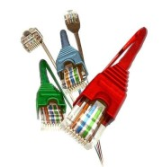

lLas redes son la pieza clave que hace que tu inversión en hardware / software enlace a la perfección.
Tanto si acabas de montar tu negocio y deseas montar una red nueva, o simplemente quieres
ampliar tu red o cambiarla por otra más rápida, nosotros te podemos ayudar.
Montamos redes por cable e inalámbricas, y tenemos todo tipo de material necesario
para que tu red soporte el duro trabajo de una empresa (Switch enracados,
tarjetas de red, routers, adaptadores y antenas inalámbricas, etc).
3.-Marketing digital
Marketing Digital es el conjunto de estrategias volcadas hacia la promoción de una marca en el internet.
Se diferencia del marketing tradicional por incluir el uso de canales y métodos que
permiten el análisis de los resultados en tiempo real